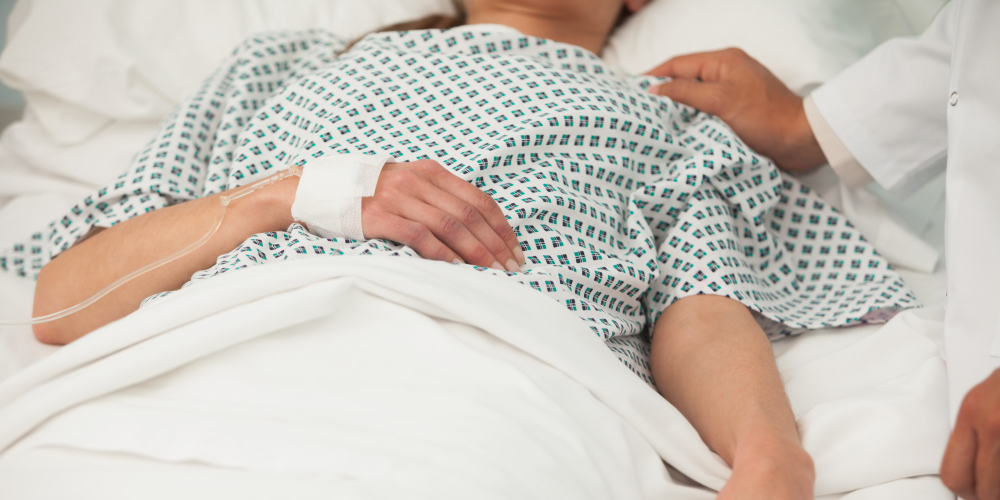
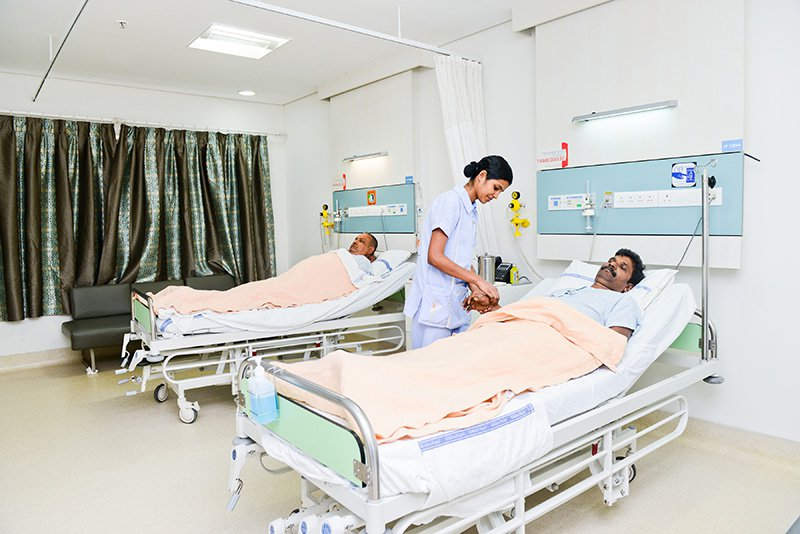

Accident & Emergency
DEPARTMENT OF CRITICAL CARE & EMERGENCY MEDICINE (SURGICAL / NEUROLOGICAL I.C.U.)
Critical Care Medicine (CCM) is a specialty that involves the management of patients with life threatening, frequently complex medical and surgical illness. The CCM physician,is also called an Intensivist in some parts of the world, has expertisein the evaluation and mgmt of these critically ill patients. These patients may have dysfunction or failure of one or more organ systems, including the cardiac, pulmonary, neurologic, liver, kidney or gastrointestinal systems. Procedures used to help support and identify the cause of the critical illness include endotracheal intubation, central venous catheterization, arterial canulation, pulmonary artery catheterization, bronchoscopy, lumbar puncture, thoracentesis, paracentesis and chest tube thoracostomy.
A modern ICU represents the pinnacle of any hospital’s approach to highly technological & sophisticated in-patient care. Over the last two decades, there has been a virtual knowledge explosion in our understanding of critical illness. The past decade has seen the ICU evolve from a rule of thumb experience based practice to an increasingly precise and scientifically based one. Critical care medicine today, is at the cutting edge of most of the technological advances in modern medicine and information technology. It takes on a cognition based structured approach, by basing patient selection on acuity…instead of age (Geriatric medicine), techniques (Anaesthesiology), organ (Pulmonary) or disease (Endocrinology). It, therefore, challenges the very traditions of responsibility for the custodial care of patients. Consultant from anaesthesia, general medicine, pulmonary & surgery can undergo further training in critical care medicine to become a CCM physician.
The department of Critical care medicine (Surgery) at Jaipur Golden Hospital is recognised nationality. The Surgical / Neurological Intensive Care Unit is being managed by a “Consultant Anaesthesiological” and P.G. student (Anaesthesiology) round the clock.
Our Surgical / Neurological ICU is one of the largest in private hospitals. The surgical / Neuro. ICU has 14 (fourteen) beds. Surgical / Neuro ICU bears a very pleasant and aesthetic look. The design was created keeping in mind the space utilization, patients, comfort, infection control and ease of providing critical care, Nursing care and the functional requirements of the unit.
Patient’s bed are equipped with Phillips multi channel Physiological monitoring systems, which allows monitoring of patients and use of invasive and non-invasive modalities. To provide organ assessment and support, the surgical / neuro. ICU has variety of equipment like ventilators, Hemodialysis, Infusion pumps, defibrillators, Blood Gas analyzer and X-Ray machines etc. Patient’s beds are pneumatic ones for patient’s comfort and for prevention of bed sores. Medical Gas (O2) is by Inox and has a liquid O2 tank of 10,000 liters capacity. Compressed air by I.O.C
INTENSIVE CARE FACILITIES (I.C.U)
- Pediatric ICU
- Neonatal ICU
- Cardiac ICU
- Medical ICU
- Cardiac Surgical ICU
- Kidney Transplant ICU
- EQUIPMENTS & INSTRUMENTS
The Surgical / Neuro. ICU is equipped with the latest and state-of-art machines and equipments to give full TERTIARY CARE support to all patients. The list of equipment is exhaustive and include the following types of makes
- Ventilators
- Dragger - Evita - 2 Dura
- Siemens - 900 c & 300 A.
- Puritan Bennet-B - 7200A.E.
- G.E. - Emestrong, Centiva
- Hemilton - Galilio.
- BIPAP Services
- Respironics
- S.T. & S
- Defibrillators
- Phillips
- Indichem
- Patient monitors
- Phillips
- Pulse Oxymeters
- Datex Ohmeda
- Cardiac monitors
- Indichem
- X-Ray machine (Portable)
- Ultra sound machine (Portable)
- G.E.
- A.B.G. machine
- Infusion Pumps (Volimetric)
- B. Braun
- Syringe Pumps
- Terumo
- J.M.S
- B.Braun
- Wipro
- Blood Warmer
- Portex
- Patient warming system
- Portex Equator Level - I
- Airway Devices
- Laryngo scopes
- L.M.A.
- Fastrach
- Proseal combitube
- L.Tube evicothpoidotomy set
- Percutaneous Tracheostomy sets
- Haemodialysis machine
SERVICES PROVIDED
- Different methods of airway management
- Percutaneous Tracheostomy
- Ventilator support
- Central venous line placement
- Arterial line placement
- Continuous pulse oximetry
- Continuous cardiac monitoring Hemodynamic monitoring synchronized cardioversion
- Temporary pacemaker insertion and maintenance
- Continuous vasoactive and antiarrhythmic drug infusions
- Thrombolytic infusion
- Haemodialysis
- Peritoneal dialysis
- Bronchoscopy
- TPN
- Pain relief
- Venous phlebotomy
- Arterial blood sampling
- Bladder catheterization
- Nasogastric tube placement
- Nasojejunal tube placement
- PEG
- Lumbar puncture
- Abdominal paracentesis
- Thoracentesis
- ICD tube placement
- Nutritional planning
- Resuscitation services in all the departments round the clock
- Emergency services round the clock

